Privacy Policy
UrSim is a free, unofficial fan-made driving simulator for the FIRST Tech Challenge season BIOBUZZ, made by team URAN92. You can play without an account. This page explains what the game keeps about you and why.
Playing without an account
- Your settings (controls, graphics, language, gamepad setup), your personal bests and the robots you build stay in your browser on your device.
- The game makes a random device ID in your browser. It goes with your match results (so we can count players and games), with the online counter, into online rooms, and with robots you add from the gallery. It says nothing about who you are.
- When you set a high score, the name you typed, your robot and your score appear in the public high score tables.
Accounts (optional)
- Sign in with Google: the game asks Google only for your basic profile (
openid profile). We receive your Google account ID and your name, and nothing else: not your e-mail address, contacts or files. The name is only a suggestion; you choose the name others see and your @username. - Sign in with an e-mail and a password: we keep your e-mail address, only to sign you in and never shown to anyone, and a salted scrypt hash of your password, so we cannot read the password itself.
- With an account the game keeps your name and @username, when you made the account, statistics of your games (the last 200: type, robot, scores, time), replays of your last 30 matches, your Workshop robots, your friends and friend requests, and robots you publish to the gallery.
- Other players can see your name, @username, career statistics and published robots. Your friends see when you are online and which room you are in.
- A session token in your browser keeps you signed in for up to 180 days. Signing out removes it.
Online play
In online rooms the players' games connect to each other directly (WebRTC), as in many online games, so players in the same room can see each other's IP addresses. To set up the connection the game uses Google's public STUN servers; when a direct connection is not possible, the game goes through our server. Other players in the room see your name.
Where it is kept, and what we don't do
Everything above is kept on the game's own server, a VPS in Kazakhstan, reached over HTTPS. We don't sell or share data, show ads, or use analytics or tracking cookies. The server's technical logs can contain IP addresses; we use them only to keep the game running.
Deleting your data
You can delete replays from your match archive and your robots in the game. To delete your account and everything kept with it, message us on Instagram or GitHub (below) with your @username, and we will delete it.
Changes
If the game starts keeping something new, this page will say so; the date at the top shows the last change.
Contact
Instagram @ursim_ftc · GitHub AendeGitHub/UrSimulator
Not affiliated with FIRST®. BIOBUZZ™ is a trademark of FIRST.